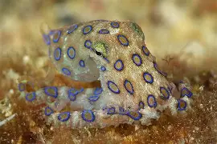
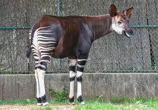

Inicio
Bienvenido a esta página. Aquí encontrarás información sobre animales exóticos, vehículos antiguos y las maravillas del mundo. También podrás conocer más sobre mí en la sección “Acerca de...”.
Animales Exóticos
El reino animal es fascinante. Aquí encontrarás algunos ejemplos de animales acuáticos, terrestres y aéreos.
Acuáticos

Terrestres

Aéreos
Vehículos Antiguos
Conoce un poco sobre el nacimiento de los vehículos y algunos modelos clásicos por marca.
- Ford Modelo T (1908): Uno de los primeros autos producidos en masa.
- Chevrolet Bel Air (1957): Símbolo del diseño estadounidense.
- Volkswagen Escarabajo (1938): El famoso “auto del pueblo”.
- Rolls-Royce Silver Ghost (1906): Sinónimo de lujo.
- Cadillac Eldorado (1959): Estilo clásico y elegante.
Las 7 Maravillas del Mundo
Conoce las siete maravillas modernas reconocidas por su historia y belleza.
- Chichén Itzá (México)
- Coliseo Romano (Italia)
- La Gran Muralla China (China)
- Machu Picchu (Perú)
- Petra (Jordania)
- Cristo Redentor (Brasil)
- Taj Mahal (India)

Acerca de.
Me gusta aprender sobre tecnología, historia y naturaleza.
Nombre completo: Almanza Dylan
Formulario de Inicio de Sesión y Registro
Completa el siguiente formulario para iniciar sesión o registrarte: